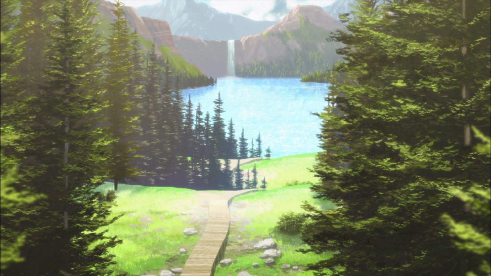
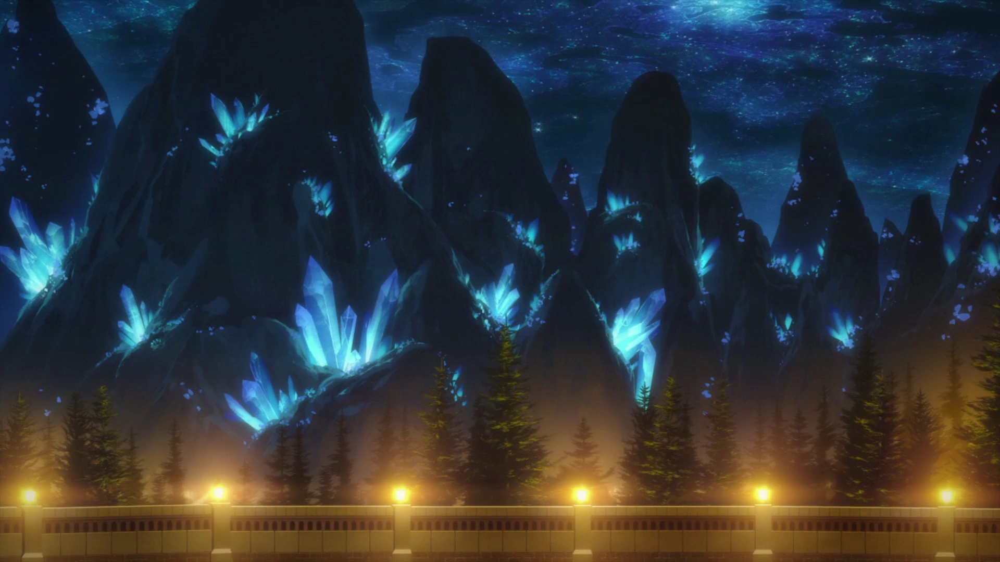
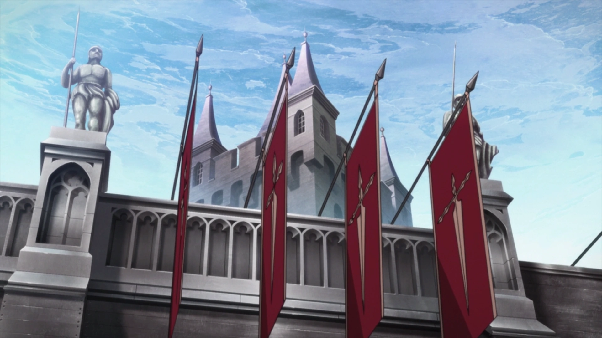
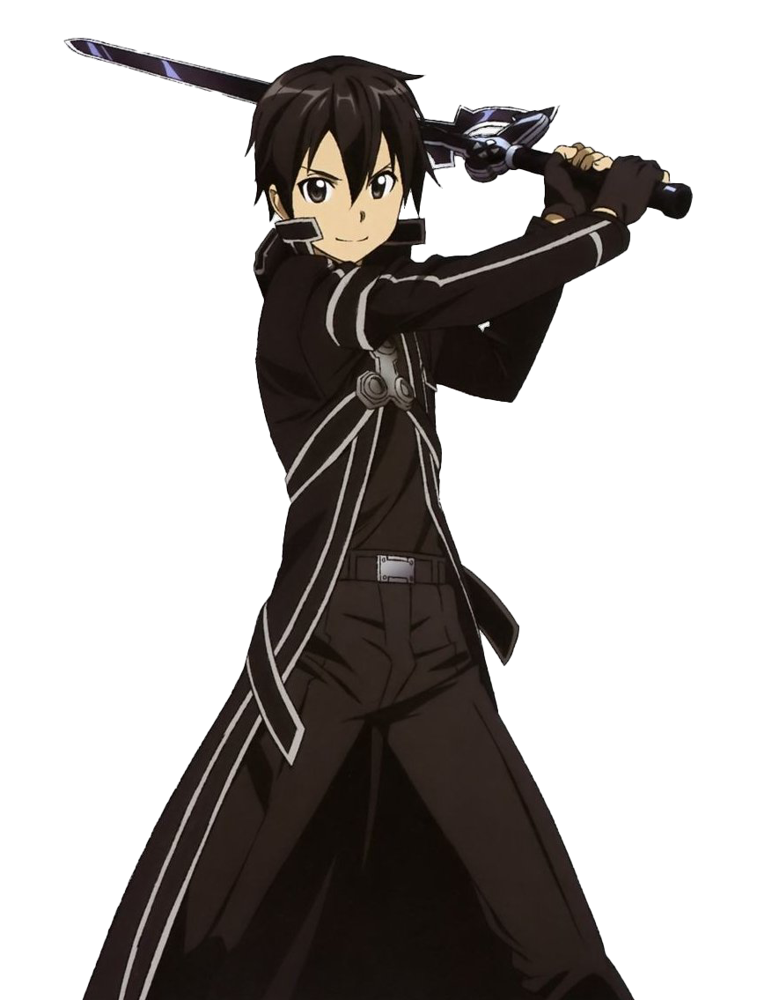
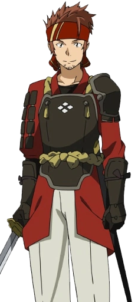
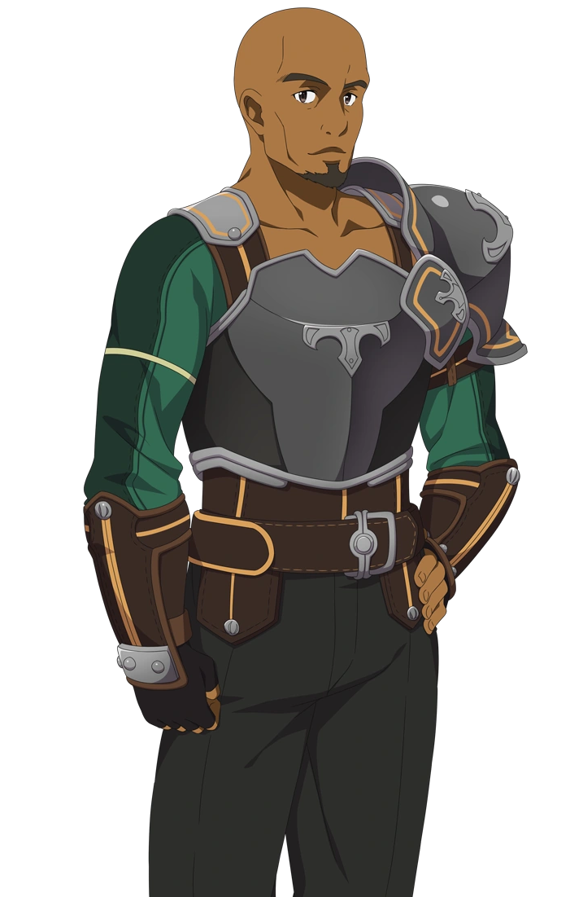
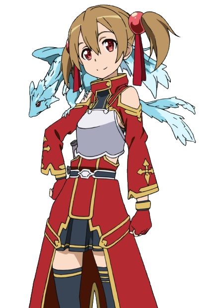

Sword Art Online
Discover the castle Aincrad
Aincrad
Aincrad (アインクラッド, Ainkuraddo) is the first «Realized World» shown in the Sword Art Online series and the stage for the first VRMMORPG «Sword Art Online», created by Kayaba Akihiko.
VRMMO
A VRMMO (Virtual Reality Massively Multiplayer Online) is an online multiplayer video game in virtual reality capable of supporting hundreds or even thousands of players simultaneously. “Virtual Reality” means experiencing reality through a game.
Monster
Aincrad is populated by monsters and you will have to beat a boss at each level if you want to escape from it.
100 levels
Levels in Aincrad
Level 1
Level 1 is where all SAO players make their debut, we can find the central place where the game master makes his announcements.

Level 1
The plains of level 1, where the XP farm begins.

Level 22
Level 22 is a peaceful level where there are many forests and lakes.

Level 27
Level 27, a rocky level with large crystal stones.

Level 55
At level 55 is the HQ of the most powerful guild in SAO: The Brotherhood of Knights.
10 000 players
Characters of SAO

Kirito
Kirigaya Kazuto (桐ヶ谷 和人, Kirigaya Kazuto), born as Narusaka Kazuto (鳴坂 和人, Narusaka Kazuto), and known as Kirito (キリト, Kirito) in «Sword Art Online» (SAO).
Asuna
Yuuki Asuna (結城 明日奈, Yūki Asuna), known as Asuna (アスナ, Asuna) in «Sword Art Online» (SAO).

Klein
Tsuboi Ryoutarou (壷井遼太郎, Tsuboi Ryōtarō), known as Klein (クライン, Kurain) in «Sword Art Online» (SAO).

Agil
Andrew Gilbert Mills (アンドリュー・ギルバート・ミルズ, Andoryū Girubāto Miruz), known as Agil (エギル, Egiru) in Sword Art Online (SAO).

Silica
Ayano Keiko (綾野珪子, Ayano Keiko), known as Silica (シリカ, Shirika) in «Sword Art Online» (SAO).

Lisbeth
Shinozaki Rika (篠崎 里香, Shinozaki Rika), known as Lisbeth (リズベット, Rizubetto) in «Sword Art Online» (SAO).